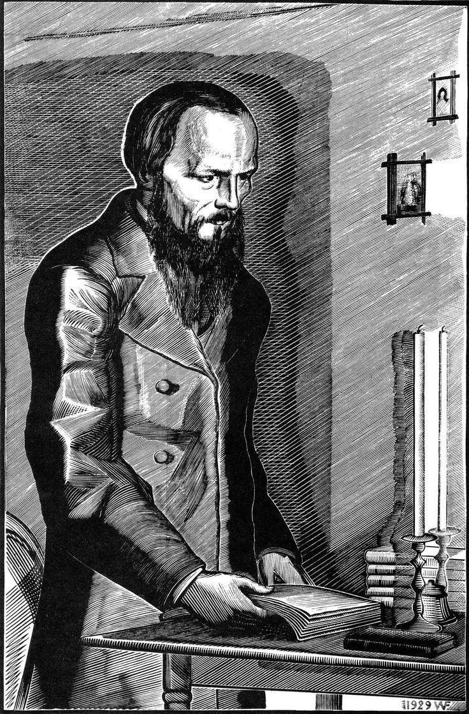

Reflexões sobre Autocobrança e Comparação Social: Lições de Dostoiévski
Estou lendo um livro do Fiodor Dostoiévski e como ele apresenta sua visão do mundo e de si próprio tem me chamado atenção. Um trecho em específico me fez refletir sobre os dias atuais e até me identifiquei com o autor. Não que isso seja algo bom, mas talvez, essa reflexão seja de alguma ajuda.
O narrador luta entre a repulsa por si, muitas das vezes refletida em outras pessoas e na visão delas sobre ele próprio, e o desejo de aparentar nobreza, o que também se apresenta como um dilema atual na sociedade.
A própria visão do personagem sobre ele mesmo, faz com que ele deduza a visão dos outros sobre sí próprio, o que, na maioria das vezes, é uma visão negativa ou distorcida.
Assim como o narrador do "Diário do Subsolo", muitas vezes nos tornamos prisioneiros de nossas próprias expectativas. A autocobrança, especialmente em relação ao futuro, visando o sucesso profissional e financeiro na maioria das vezes, pode afetar nossa saúde mental.
Dados Relevantes
- Estudos revelam que, entre os brasileiros que passam 3 horas ou mais por dia nas redes sociais, 43,5% possuem diagnóstico de ansiedade. [CNN Brasil]
- A Organização Mundial da Saúde (OMS) alerta que 11% dos adolescentes apresentam sinais de uso problemático das redes sociais, o que aumenta o risco de depressão e ansiedade. [RFI]
- Pesquisas indicam que o uso excessivo das redes sociais pode levar ao desenvolvimento de problemas como ansiedade, depressão e baixa autoestima, especialmente devido à comparação social constante. [O Globo]
Reflexão Final
Já sentiu que sua vida é "menor" porque não se parece com o que vê na internet? Como você lida com essas comparações?